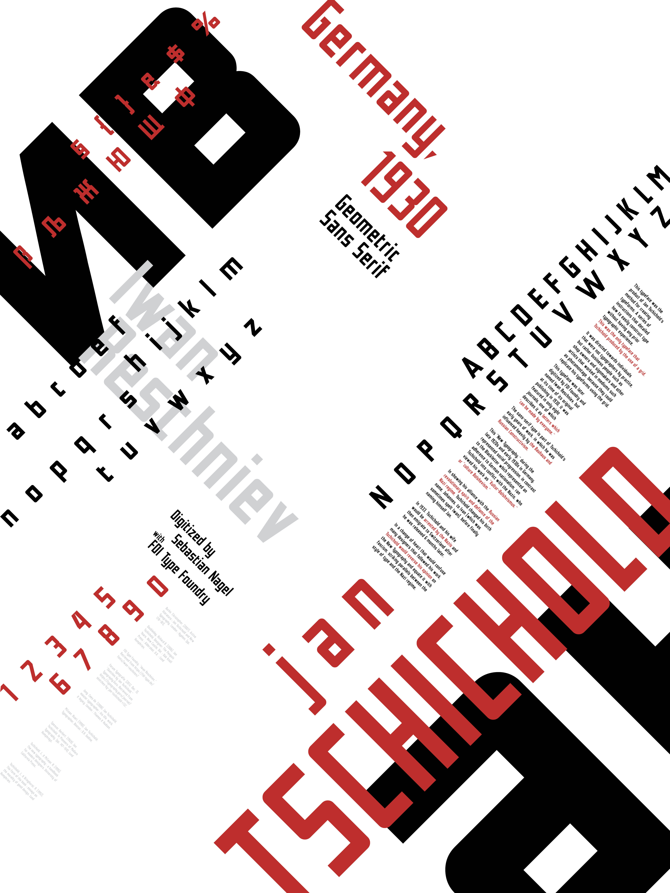
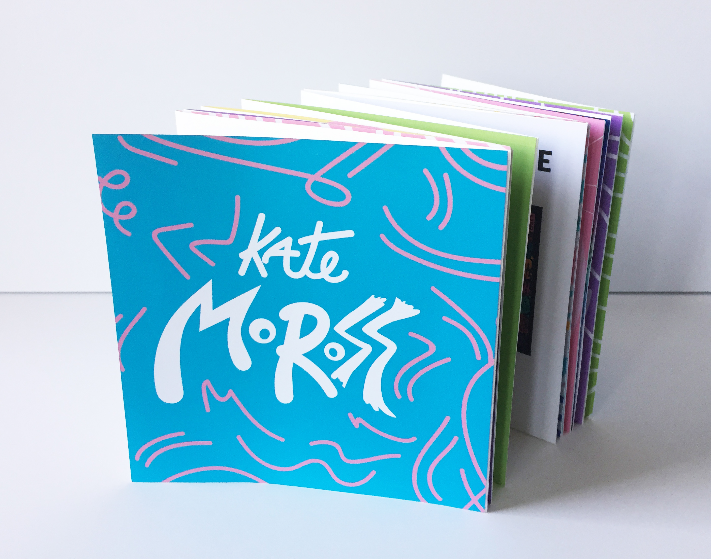
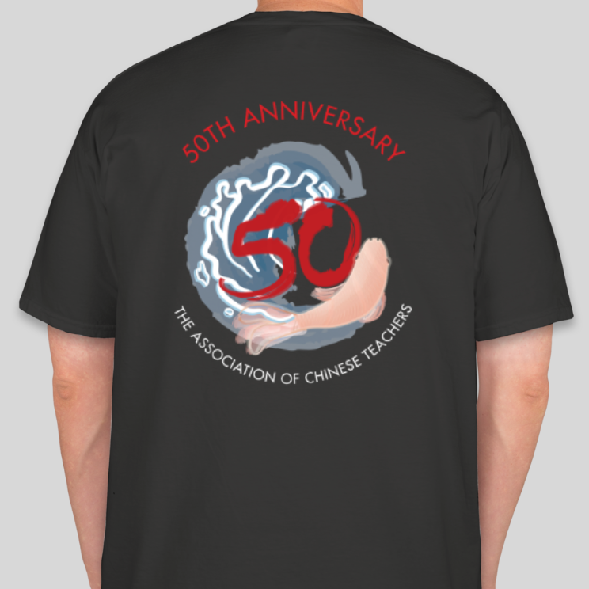
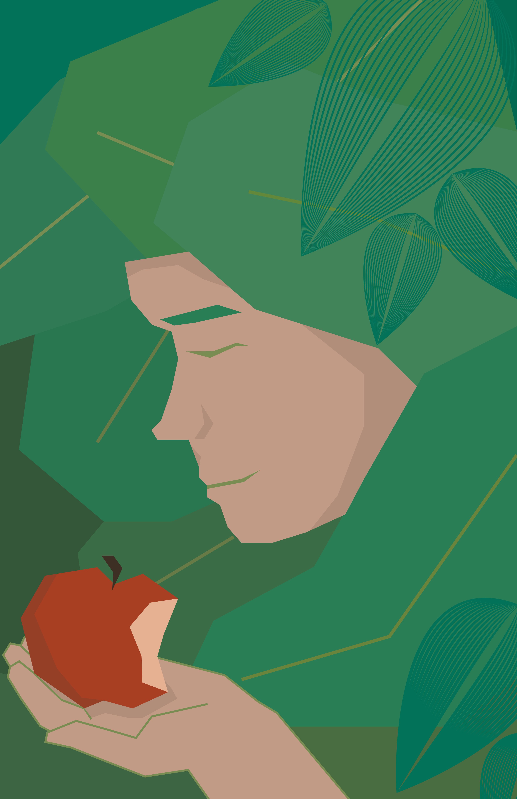
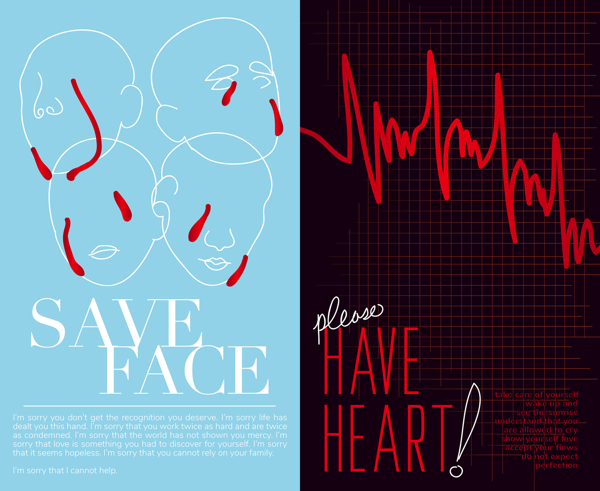
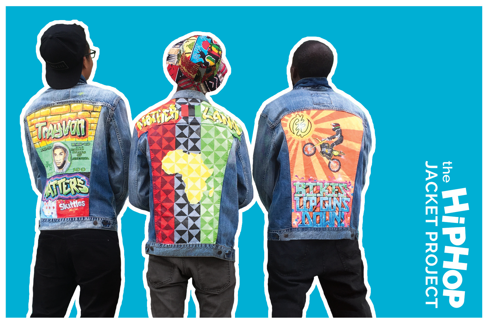

MAJ JENKINS.
GRAPHIC DESIGN
Print Work
Web & Interactive Design
Video Art
About
Typography Posters

Kate Moross Accordion Book

Student Hunger Poster
Architectural Forms
TACT 50th Anniversary Logo

Nutrition

Save Face, Have Heart

Root Division
The Imagine Bus Project
